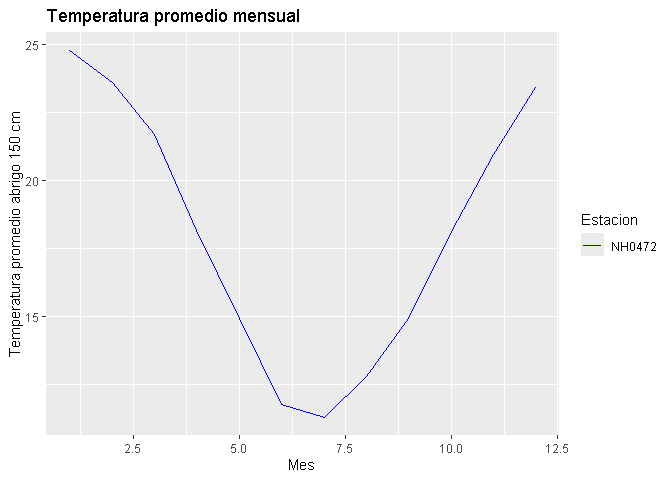

El objetivo de este paquete es analizar datos de estaciones meteorologicas, resumiendo y presentadolos.
Instalación
Podes instalar el paquete en GitHub con:
# install.packages("pak")
# pak::pak("lizmartinez-droid/meteorologia")Funciones
El paquete incluye tres funciones:
leer_datos_estacion() Descarga y lee los datos meteorológicos de una estación específica del INTA.
estacion1 <- leer_datos_estacion("NH0472", "NH0472.csv")
#> El archivo ya esta descargado, se procede a leerlo...
#> Lectura completada correctamente para la estacion NH0472.tabla_resumen_temperatura() Crea una tabla resumen con estadísticas básicas de temperatura (promedio, desvío, máximos y mínimos).
tabla_resumen_temperatura(estacion1)
#> # A tibble: 1 × 5
#> id promedio_temperatura desvio_estandar temp_max temp_min
#> <chr> <dbl> <dbl> <dbl> <dbl>
#> 1 NH0472 18.0 5.94 42.1 -8grafico_temperatura_mensual() Genera un gráfico de líneas con la temperatura promedio mensual de una o varias estaciones.
grafico_temperatura_mensual(estacion1, c("blue"), "Temperatura promedio mensual")
Créditos
Datos meteorológicos obtenidos del Instituto Nacional de Tecnología Agropecuaria (INTA) – Sistema de Información y Gestión Agropecuaria (SIGA).
Licencia
Este paquete se distribuye bajo la licencia MIT.
Cómo contribuir
Si querés colaborar con este proyecto, por favor leé primero nuestra guía de contribución: Guía de contribución